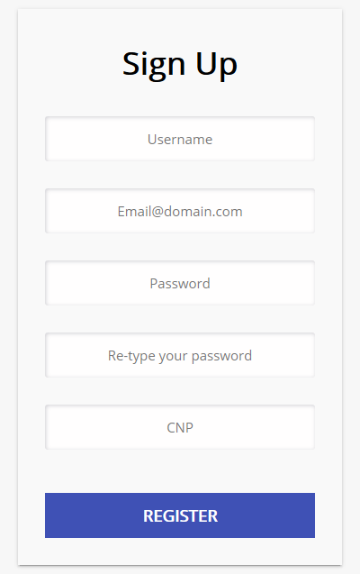
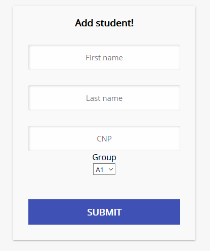
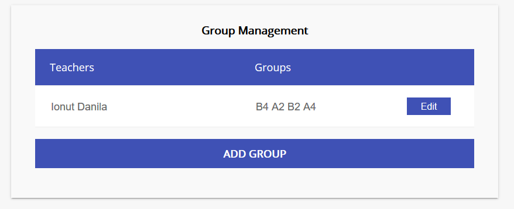
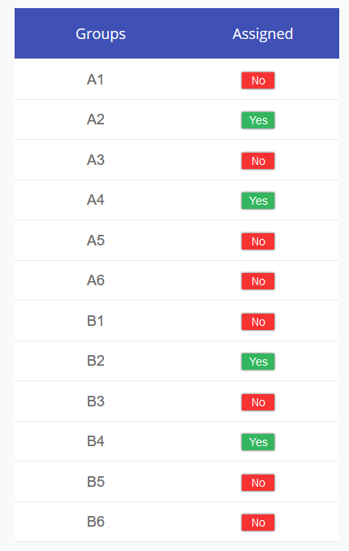
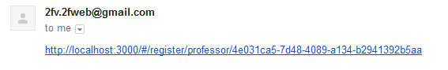
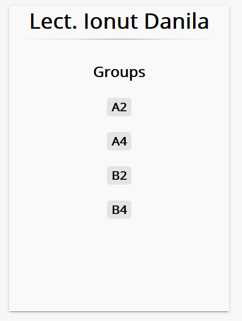
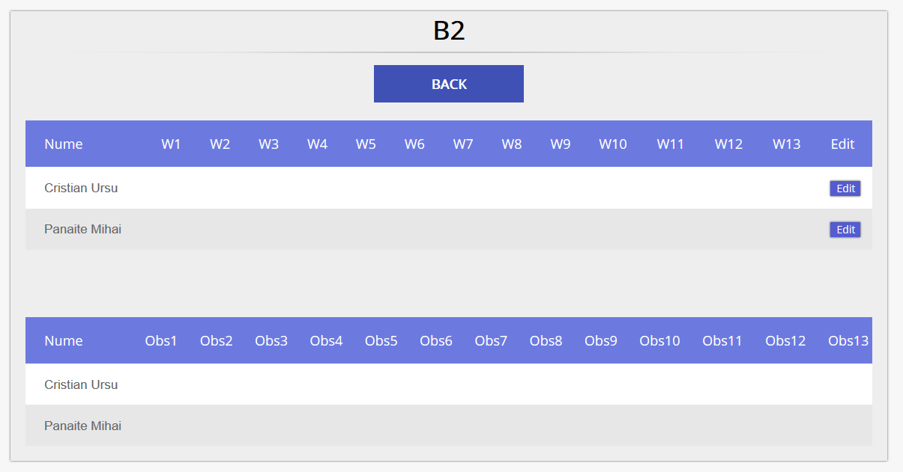
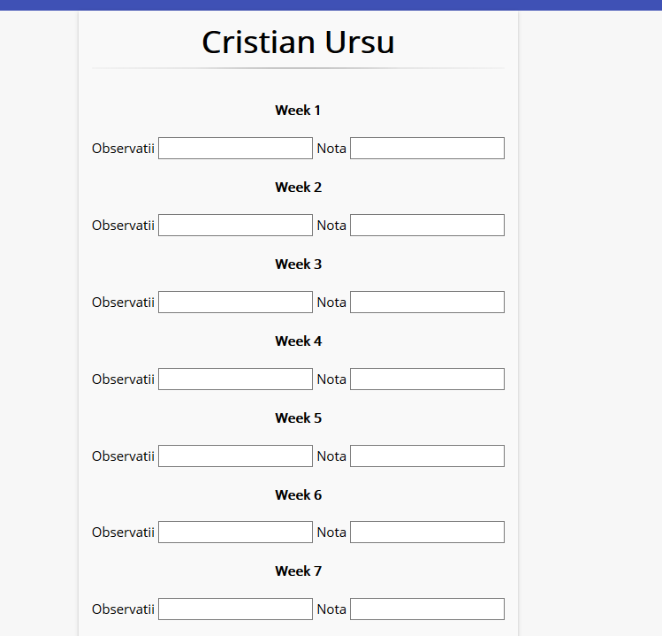
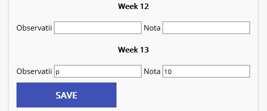
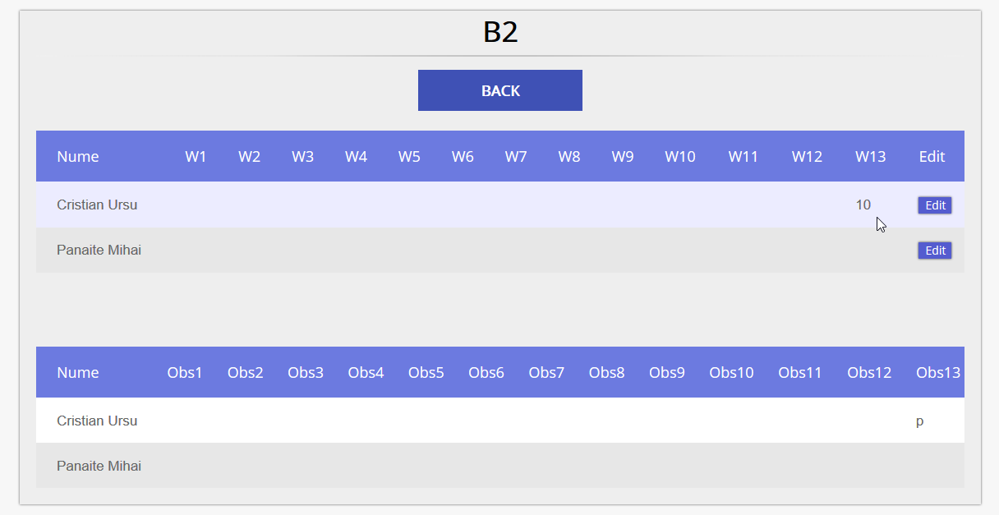

Entering our website you will be greeted by the welcome screen.
As a student, we can take the register steps, which as long as the CNP exists on the server, it will grant a student account linked to that specific CNP
With admin rights, we have control over Groups,Teachers and Students. There are 3 main things an admin can do:
Invite a teacher.
From here, the teacher has to accept the invitation and will be able to create an account.
Create a student entity.
From here, the student can create a user account linked to this student entity trough the CNP.
Manage groups and assign them to teachers
 Once invited by the admin, using the link received on email, the teacher can register with a unique link in similar fashion to the student.
After registering, the link expires and the teacher has to wait for an admin to assign him some groups to take care of.
Now, the teacher can click on his page and choose one of his assigned groups.
 From here, the teacher can select a student to edit his grades, or go back and select another group
Editing some fields and then clicking save will update the students grades in the database
 